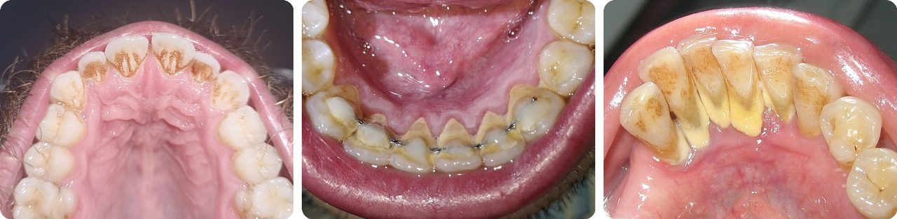

🌍 톱 10 치아의 구조, 충치, 그리고 치아에 관한 신기한 이야기
2026년 11월 17일
1. 💎 치아 법랑질은 우리 몸에서 가장 단단해요
 이의 바깥쪽 하얗고 반짝이는 층이 법랑질인데, 우리 몸의 어떤 뼈보다도 단단해요. 96%가 광물이고, 주로 칼슘과 인산염으로 된 결정이에요. 두께는 아무리 두꺼워도 2.5밀리미터, 얇은 동전 두 개를 겹친 정도예요.
이의 바깥쪽 하얗고 반짝이는 층이 법랑질인데, 우리 몸의 어떤 뼈보다도 단단해요. 96%가 광물이고, 주로 칼슘과 인산염으로 된 결정이에요. 두께는 아무리 두꺼워도 2.5밀리미터, 얇은 동전 두 개를 겹친 정도예요.
그런데 깨지기 쉽고, 큰 약점이 하나 있어요. 살아 있지 않다는 거예요. 법랑질을 만드는 세포는 이가 잇몸 밖으로 나오기도 전에 없어져요.
그래서 법랑질에는 신경도, 피도 없고, 다시 자랄 방법도 없어요. 아주 작은 초기 손상은 입안에서 어느 정도 회복되지만, 진짜 구멍이 생기면 몸도 치과의사도 다시 자라게 할 수 없어요. 때우는 건 그냥 구멍을 막는 거예요.
절대 고칠 수 없고, 덧대기만 할 수 있는 갑옷인 셈이에요.
2. 🧊 법랑질 아래, 이 속은 아주 작은 관으로 가득해요
 법랑질 아래에는 상아질이 있어요. 누르스름하고 더 무른 층인데, 이의 색깔을 결정해요. 이 안에는 상아세관이라는 현미경으로만 보이는 터널이 꽉 차 있어요. 이 중심 가까이에서는 1제곱밀리미터, 그러니까 연필 끝만 한 자리에 59,000~76,000개나 있어요.
법랑질 아래에는 상아질이 있어요. 누르스름하고 더 무른 층인데, 이의 색깔을 결정해요. 이 안에는 상아세관이라는 현미경으로만 보이는 터널이 꽉 차 있어요. 이 중심 가까이에서는 1제곱밀리미터, 그러니까 연필 끝만 한 자리에 59,000~76,000개나 있어요.
관마다 살아 있는 세포의 가느다란 팔 하나와 액체가 조금 들어 있어요. 법랑질이 닳아서 관이 드러나면, 가장 유력한 설명은 이래요. 차가운 게 닿으면 액체가 움직여요 → 그 움직임이 신경을 건드려요 → 순간 '찌릿' 하고 시려요.
그리고 법랑질과 달리, 상아질은 평생 조금씩 계속 자라요.
신경으로 이어진 아주 작은 빨대가 잔뜩 꽂힌 스펀지라고 생각해 보세요.
3. 🔴 모든 이에는 나이가 들수록 작아지는 살아 있는 속이 있어요
 이 한가운데에는 치수가 있어요. 신경과 혈관이 들어 있는 부드러운 조직이에요. 치관 안의 작은 방에서 시작해서 뿌리 속 가느다란 관을 따라 아래로 이어져요.
이 한가운데에는 치수가 있어요. 신경과 혈관이 들어 있는 부드러운 조직이에요. 치관 안의 작은 방에서 시작해서 뿌리 속 가느다란 관을 따라 아래로 이어져요.
어른 이 하나의 치수는 약 0.02세제곱센티미터밖에 안 돼요. 물 반 방울도 안 되는 양이에요. 치수 바깥쪽 세포들이 바로 새 상아질을 계속 만드는 세포예요.
새 상아질이 안쪽으로 쌓이니까, 나이가 들수록 치수가 있는 방은 점점 작아져요. 충치가 치수까지 가면, 치과의사가 신경 치료, 그러니까 치수를 깨끗이 긁어내는 치료를 해야 할 수도 있어요.
다시 말해, 이는 작고 살아 있는 속을 감싼 단단한 껍데기예요.
4. 🍬 이를 썩게 하는 건 설탕이 아니라 설탕을 먹는 세균이에요
 충치가 생기려면 네 가지가 필요해요. 이, 알맞은 세균, 설탕, 그리고 시간이에요. 주범은 이 표면의 끈적한 막, 즉 치태(플라크)에 사는 스트렙토코쿠스 뮤탄스라는 세균이에요.
충치가 생기려면 네 가지가 필요해요. 이, 알맞은 세균, 설탕, 그리고 시간이에요. 주범은 이 표면의 끈적한 막, 즉 치태(플라크)에 사는 스트렙토코쿠스 뮤탄스라는 세균이에요.
설탕을 먹으면 이 세균도 같이 먹고, 설탕을 젖산으로 바꿔요. 치태의 pH가 5.5 아래로 떨어지면(블랙커피보다 살짝 덜 신 정도), 법랑질이 녹기 시작해요. 게다가 이 세균은 설탕을 끈끈한 풀로 바꿔서 이에 단단히 달라붙어요.
그래서 간식을 얼마나 자주 먹느냐가 중요해요. 단 걸 먹을 때마다 치태 속 산이 빠르게 늘어나거든요. 2016년에는 약 36억 명, 세계 인구의 거의 절반이 영구치에 충치가 있었어요.
한마디로, 사탕 하나 먹을 때마다 세균과 나눠 먹는 거고, 세균이 남기는 찌꺼기가 산이에요.
5. 🪨 치석은 '화석이 된 세균'으로 가득한 딱딱해진 치태예요

치태가 이에 오래 붙어 있으면, 침 속의 광물이 스며들어 딱딱하게 굳어서 치석이 돼요.굳으면서 안에 있던 세균은 죽지만, 표면이 거칠어져서 새 치태가 더 빨리 달라붙어요 → 층이 점점 더 쌓여요 → 잇몸을 자극해서 붓게 하고 내려앉게 할 수 있어요. 한번 굳으면 칫솔로는 못 떼어 내요. 치위생사가 긁어내야 해요.
과학자들은 치석을 콘크리트에 비유해요. 죽은 세균이 자갈 역할을 하는 거예요. 얼마나 빽빽한지 1밀리그램, 쌀 한 톨보다 작은 부스러기에 세포가 약 2억 개나 들어 있어요. 고고학 발굴에서 나온 치석에는 DNA와 음식 조각까지 남아 있어서, 옛날 사람들이 뭘 먹었는지 알 수 있어요.
이에 돌로 새긴 식사 일기장인 셈이에요.
6. 🥤 탄산음료와 주스는 세균 없이도 이를 깎아 내요
 충치는 세균 때문에 생기지만, 산 부식은 아니에요. 음식과 음료 속 산이 법랑질을 직접 녹이는 거예요. 5~17세 아이들에게 가장 흔한 만성 질환이에요.
충치는 세균 때문에 생기지만, 산 부식은 아니에요. 음식과 음료 속 산이 법랑질을 직접 녹이는 거예요. 5~17세 아이들에게 가장 흔한 만성 질환이에요.
pH가 대략 5.0~5.7보다 낮은 음료는 이를 부식시킬 수 있어요. 콜라에서 문제는 거품이 아니라, 맛을 내려고 넣은 구연산과 인산이에요. 과일 주스도 은근히 위험해요. 시험한 다른 음료들보다 침이 산을 중화하려는 걸 더 잘 버티거든요.
얼마나 많이 마시느냐보다 얼마나 자주 마시느냐가 더 중요해요. 신 음료를 홀짝홀짝 계속 마시면 이를 자꾸 산에 다시 담그는 거예요.
이가 묽은 산 목욕탕에서 천천히 녹는 것과 같아요.
7. 🇺🇸 콜로라도의 갈색 얼룩 이가 불소를 알려 줬어요
 1900년대 초, 프레더릭 매케이라는 치과의사는 콜로라도 사람들 중 많은 이가 얼룩덜룩한 갈색 이를 가진 걸 알아챘어요. '콜로라도 갈색 얼룩'이라고 불렸죠. 이상한 점은, 얼룩진 이에 충치가 거의 없다는 거였어요.
1900년대 초, 프레더릭 매케이라는 치과의사는 콜로라도 사람들 중 많은 이가 얼룩덜룩한 갈색 이를 가진 걸 알아챘어요. '콜로라도 갈색 얼룩'이라고 불렸죠. 이상한 점은, 얼룩진 이에 충치가 거의 없다는 거였어요.
매케이는 30년 동안 이 수수께끼를 파고들었어요. 1931년, 한 화학자가 얼룩이 흔한 여러 지역의 물을 분석해서 답을 찾았어요. 마시는 물에 자연적으로 들어 있는 불소였어요.
그 뒤 과학자들은 리터당 약 1밀리그램 정도의 적은 양이면 갈색 얼룩 없이, 기껏해야 아주 옅은 자국만 남기고 충치를 막을 수 있다는 걸 알아냈어요. 1945년 1월 25일, 미시간주 그랜드래피즈가 처음으로 일부러 수돗물에 불소를 넣은 도시가 됐고, 1950년 결과에서 충치가 훨씬 줄어든 게 확인됐어요.
한마디로, 얼룩 수수께끼가 충치와 싸우는 수돗물이 된 거예요.
8. 👶 젖니를 쓰는 동안 어른 이는 턱 속에 숨어 있어요
 아이들은 젖니가 20개 있어요. 젖니의 싹은 태어나기 전, 아기가 엄마 배 속에서 겨우 8주쯤 자랐을 때 생기기 시작하고, 보통 6개월쯤부터 나오기 시작해요.
아이들은 젖니가 20개 있어요. 젖니의 싹은 태어나기 전, 아기가 엄마 배 속에서 겨우 8주쯤 자랐을 때 생기기 시작하고, 보통 6개월쯤부터 나오기 시작해요.
그동안 어른 이는 아래쪽 턱뼈 속에서 자라요. 어른 이가 하나씩 올라오면서 젖니 뿌리를 눌러요 → 특별한 세포가 그 뿌리를 녹여요 → 젖니가 흔들리다가 빠져요. 보통 6살에서 12살 사이에 일어나요.
튀르키예와 그리스에서는 아이들이 빠진 이를 지붕 위로 던지고 소원을 빌어요. 인도, 한국, 베트남에서는 이를 지붕에 던지면서 쥐 이빨로 바꿔 달라고 하기도 해요. 쥐 이빨은 평생 계속 자라거든요.
두 번째 이 세트가 자기 차례를 기다리며 줄 서 있다고 생각해 보세요.
9. 🇺🇸 조지 워싱턴의 틀니는 나무가 아니었어요
 1789년 4월 30일, 조지 워싱턴이 미국의 첫 대통령이 됐을 때 그에게 남은 자기 이는 딱 하나였어요. 그는 평생 적어도 네 벌의 틀니를 썼어요.
1789년 4월 30일, 조지 워싱턴이 미국의 첫 대통령이 됐을 때 그에게 남은 자기 이는 딱 하나였어요. 그는 평생 적어도 네 벌의 틀니를 썼어요.
많은 사람이 나무로 만들었다고 생각하지만, 나무는 하나도 들어 있지 않았어요. 하마 상아, 놋쇠, 금, 동물 이, 그리고 사람 이로 만들었어요. 스프링이 위아래를 벌려 주고, 볼트가 둘을 붙잡아 줬어요.
그는 호두를 이로 깨 먹다가 이가 빠졌다고 했대요. 기록에 따르면 1784년에 마운트버넌의 노예로 부려지던 사람들에게 돈을 주고 이 아홉 개를 샀는데, 그 이가 워싱턴 자신을 위한 것이었는지는 역사학자들이 아직도 논쟁 중이에요.
그의 미소는 이라기보다 공구 상자에 가까웠어요.
10. 🪥 칫솔이 생기기 전에는 나뭇가지를 씹었어요
 칫솔의 조상은 씹는 나뭇가지예요. 끝을 씹어서 보풀처럼 만든 나뭇가지로 이를 문질렀어요. 가장 오래된 건 기원전 3500년쯤, 지금의 이라크인 수메르까지 거슬러 올라가요. 이슬람 세계의 미스왁처럼 지금도 많은 사람이 써요.
칫솔의 조상은 씹는 나뭇가지예요. 끝을 씹어서 보풀처럼 만든 나뭇가지로 이를 문질렀어요. 가장 오래된 건 기원전 3500년쯤, 지금의 이라크인 수메르까지 거슬러 올라가요. 이슬람 세계의 미스왁처럼 지금도 많은 사람이 써요.
지금 칫솔과 비슷한 첫 솔 칫솔은 중국 당나라(619~907년) 때 나왔어요. 대나무나 뼈로 만든 손잡이에 돼지털을 묶은 거였어요. 그 돼지는 시베리아처럼 추운 곳에서 왔는데, 추우면 털이 더 뻣뻣해졌기 때문이에요.
유럽 사람들은 1600년대에 이 칫솔을 받아들였지만 돼지털이 너무 거칠다고 느껴서, 많은 사람이 더 부드러운 말털을 썼어요. 나일론 칫솔모는 1938년에야 나왔어요.
다시 말해, 여러분의 칫솔은 씹은 나뭇가지의 고급 버전이에요.
재미있는 사실
영국 최초로 대량 생산된 칫솔은 감옥에서 떠올린 아이디어로 알려져 있어요. 1770년, 윌리엄 애디스는 폭동을 일으켜 감옥에 갇혔는데, 헝겊에 그을음과 소금을 묻혀 이를 닦는 게 영 마음에 들지 않았어요. 그래서 밥에서 나온 작은 뼈를 남겨 구멍을 뚫고, 간수에게 얻은 털을 붙였어요. 출소한 뒤 칫솔 사업을 시작해 부자가 됐고, 그의 가족은 1996년까지 회사를 운영했어요. 또 어떤 생활 발명품들이 감옥 안에서 처음 떠올랐을지 궁금해지지 않나요?
사진 출처 (Wikimedia Commons)
- #1: Molar cut up during extraction - 2018-08-29 - Andy Mabbett -.jpg by Andy Mabbett, CC BY-SA 4.0
- #1: Lower wisdom tooth.jpg by No machine-readable author provided. Gleam~commonswiki assumed (based on copyright claims)., CC BY-SA 3.0
- #1: Young girl smiling with teeth in sunshine.jpg by Basile Morin, CC BY-SA 4.0
- #2: Dentinal tubules.jpg by Pinkmanggis, CC BY-SA 4.0
- #2: Dentinal tubules. Transverse ground section (rawpixel) by thegetty, CC0
- #2: Odontoblasts, showing Tomes's fibers entering (rawpixel) by thegetty, CC0
- #3: Dental X-Ray (flickr) by schoschie, CC BY 2.0
- #3: Pulp tissue removed during endodontic therapy by a size 20 broach file.jpg by DRosenbach at en.Wikipedia, Public domain
- #3: Electric pulp tester unit.jpg by Coronation Dental Specialty Group, CC BY-SA 3.0
- #4: Various candy and lollipops, 2007.jpg by Nick Carter, CC BY 2.0
- #4: Dental Caries Lower Right First Molar.jpg by Dr. Yogesh, CC BY-SA 4.0
- #4: Dental Caries Cavity 2 (cropped).JPG by Suyash.dwivedi, CC BY-SA 4.0
- #5: Dental Calculus.jpg by JonathanPulse, CC0
- #5: Sarro.jpg by Roquex, CC0
- #5: MandibularAnteriorCalculus.JPG by DRosenbach at English Wikipedia, Public domain
- #6: Mexican Coca Cola.jpg by Mike Mozart, CC BY 2.0
- #6: Молочный зуб любителя кока-колы.jpg by Anastasialogunov, CC BY 4.0
- #6: Coca-Cola glass bottle.jpg by Oleg Yunakov, CC BY-SA 4.0
- #7: Dental Flurosis (teeth with brown stains).jpg by Nizil Shah, CC BY-SA 4.0
- #7: Dental fluorosis (mild).png by Matthew Ferguson 57, CC BY-SA 4.0
- #7: Gezicht op Colorado Springs en het spoorwegstation met op de achtergrond de Pikes Peak Colorado Springs and Pikes Peak (titel op object), RP-F-2012-96-220.jpg by Rijksmuseum, CC0
- #8: Pano8.png by Roquex, CC0
- #8: Smiling young girl with deciduous teeth.jpg by Basile Morin, CC BY-SA 4.0
- #8: Deciduous teeths.jpg by Sebastian Wallroth, Public domain
- #9: Washington Teeth.jpg by BakedintheHole, CC BY-SA 4.0
- #9: Gilbert Stuart - George Washington (The Athenaeum Portrait) - Google Art Project.jpg by Gilbert Stuart, Public domain
- #9: West Face of Mansion, Mount Vernon, Near Alexandria, Virginia (2731038734).jpg by Ken Lund from Reno, Nevada, USA, CC BY-SA 2.0
- #10: Miswak 2014.jpg by محمد الفلسطيني, CC BY-SA 3.0
- #10: Napoleon Bonaparte's Toothbrush Wellcome L0043828.jpg by unknown, CC BY 4.0
- #10: Miswak003.jpg by Middayexpress, CC BY-SA 3.0


.JPG){kind=link}


.jpg){kind=link}
.png){kind=link}
,_RP-F-2012-96-220.jpg){kind=link}


_-_Google_Art_Project.jpg){kind=link}
.jpg){kind=link}